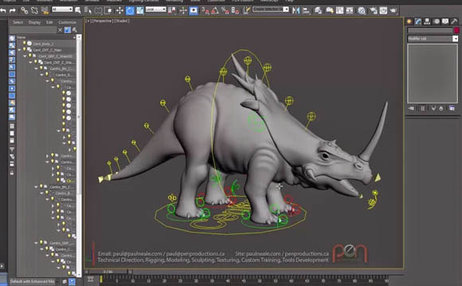
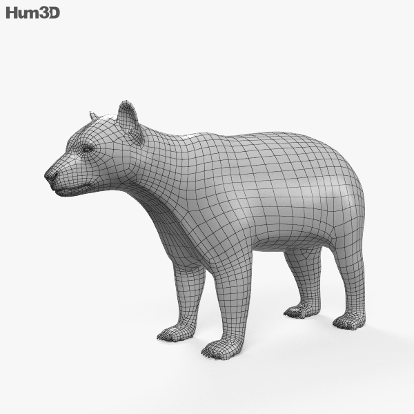
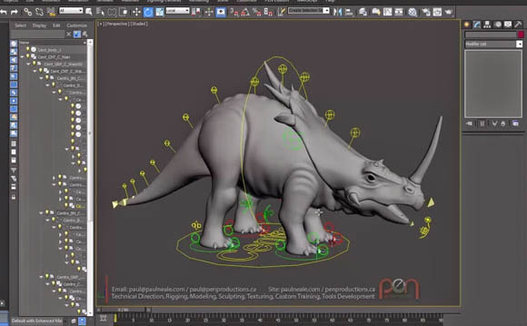
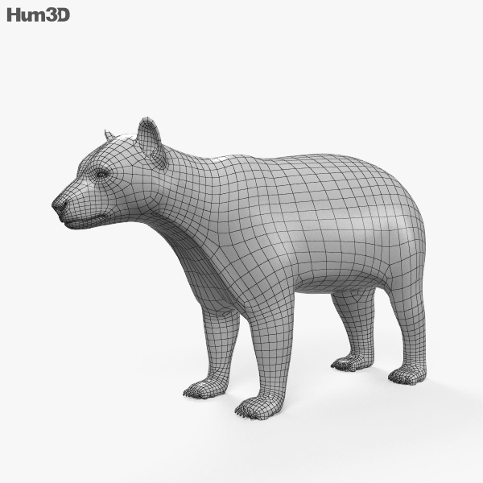

Informatika sa v umení využíva napríklad vo filme, fotografiách, grafike, reklame a v hudbe. Vo filme sa využíva na vytváranie špeciálnych efektov, ktoré sú zo zvyšujúcou sa úrovňou informatiky stále reálnejšie. Informatika sa taktiež využíva pri upravovaní fotografií.V hudbe sa informatika využíva napríklad na mixovanie a rôzne úpravy piesní.
Grafika
Grafika je druh výtvarného umenia, ktorý prenáša kresbový prejav do hmoty . Pojem grafika pochádza z gréckeho slova "grafein" – kresliť. Pod týmto pojmom rozumieme transportovanie videných, alebo zažitých foriem do sústavy línií, bodov a plôch. Grafika bola vo svojich počiatkoch hlboko závislá na maliarstve. Neskôr sa od neho oddeľovala a vďaka niektorým veľkým umeleckým osobnostiam prestávala byť iba prostriedkom reprodukovania malieb.
Počítačová grafika je odbor informatiky, ktorý využíva počítače na vytváranie umelých obrazov, na úpravu zobraziteľných a priestorových informácií nasnímaných z reálneho sveta - napríklad digitálna fotografia, skenovanie 2D, 3D.
 


